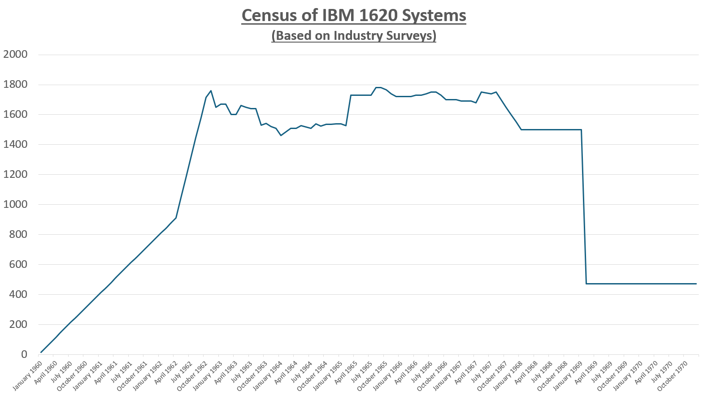

The magazine "Computers and Automation" published a census of world-wide counts of installed computers every few months during the IBM 1620's lifetime. The census was based on end-user surveys. The counts were only as good as the surveys returned. The census counts do not include the number of IBM 1620 computers that IBM had installed internally or any IBM 1710 / 1720 systems. Other publications also published computer surveys, but on an irregular basis. It's remarkable that so many government locations, companies, organizations, and schools would freely release information about what computers they had.
Here is a graph of the census data:

Here are the computer census articles:
| Title | Publication | Date |
|---|---|---|
| 5 New Products | 1 | IBM |
| Blueprint for Creative Engineering Progress - The Unique New IBM 1620 | 1 | IBM |
| Calcomp 563 Digital Plotter Teams With IBM 1620 Computer to Plot Automatic Contour Maps | 3 | Calcomp |
| Free Engineers for Creative Assignments with the New Low-Cost IBM 1620 | 1 | IBM |
| How to Get the Most Out of the Most Modern of Computers | 5 | Hayden Book Co. |
| IBM 1620 - Most Powerful General Purpose Computer in the Low-Price Field | 1 | IBM Australia |
| IBM 1620 Being Modified | 7 | T.K. Maki |
| IBM 1620 Computer For Sale | 6 | Delta Electronics Co. |
| IBM 1620 Computer For Sale | 6 | Mona Grove High School |
| Introduction to Electronic Computers | 5 | J. Wiley & Sons, Inc. |
| Seven Reasons Why the S-C 3070 is the Best Output Printer for Small and Medium Sized Computers | 3 | Stromberg-Carlson |
| The First Automated PSYCHOMETRIC Test Designed for the Non-Psychiatric Physician | 2 | |
| This Computer Processes Over 4000 Lines of Type an Hour | ||
| Too Bad About Your IBM 1620 | 3 | Scientific Data Systems |
| Want to Find Coefficients? It's Easy with the New Regression Analysis Program for the IBM 1620 | 2 | |
| Writing the Menu for Senor Rojo's Cows | 1 |